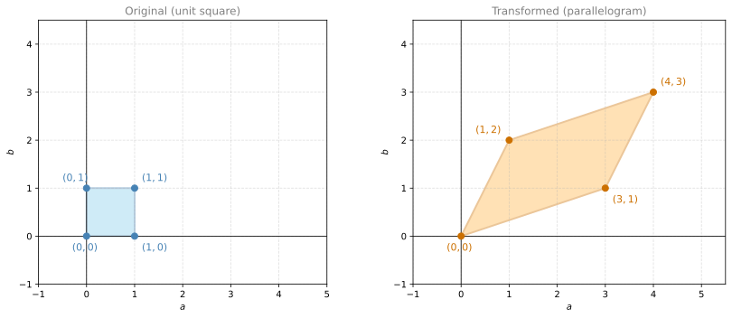
Linear Transformations
linear-algebra
In the previous notes you have seen matrices as arrays of numbers that represent systems of linear equations. But there is another very powerful and very useful way to think about matrices: as linear transformations. Transformation is just a fancy name for function: it takes an input and produces an output. In particular, it takes a vector and produces another vector. A transformation is linear if it has two properties: all lines must remain lines (not curved), and the origin must stay at the origin. A linear transformation is a way to send each point in the plane to another point in the plane in a very structured way.
Why would you care? Because almost everything in machine learning is a transformation. When a neural network processes an image, it transforms the pixel values through layer after layer until it arrives at a prediction. When you rotate, scale, or compress data, you are applying transformations. Thinking of matrices as transformations gives you a geometric intuition for what the numbers are actually doing. Instead of staring at a grid of numbers, you can see the matrix stretching, rotating, or flipping the space. This intuition will help you understand matrix multiplication, inverses, determinants, and eigenvalues in a much deeper way.
Matrices as Transformations
Say you have this \(2 \times 2\) matrix:
\[A = \begin{bmatrix} 3 & 1 \\ 1 & 2 \end{bmatrix}\]
Here is the linear transformation it corresponds to. Consider two planes with axes labeled \(a\) and \(b\). The transformation sends every point on the left plane to a point on the right plane. To find where a point goes, take its coordinates as a column vector, multiply by the matrix, and the result is the new point.
Let’s work through some examples.
The origin: \(A \begin{bmatrix} 0 \\ 0 \end{bmatrix} = \begin{bmatrix} 0 \\ 0 \end{bmatrix}\). The origin always stays at the origin. This is true for every linear transformation.
The point \((1, 0)\): \(A \begin{bmatrix} 1 \\ 0 \end{bmatrix} = \begin{bmatrix} 3 \\ 1 \end{bmatrix}\). So \((1, 0)\) goes to \((3, 1)\).
The point \((0, 1)\): \(A \begin{bmatrix} 0 \\ 1 \end{bmatrix} = \begin{bmatrix} 1 \\ 2 \end{bmatrix}\). So \((0, 1)\) goes to \((1, 2)\).
The point \((1, 1)\): \(A \begin{bmatrix} 1 \\ 1 \end{bmatrix} = \begin{bmatrix} 4 \\ 3 \end{bmatrix}\). So \((1, 1)\) goes to \((4, 3)\).
Now look at the unit square formed by these four points on the left. It gets transformed into a parallelogram on the right:
The Basis and Tessellation
The unit square on the left is called a basis. The parallelogram on the right is also a basis. A very special property of these shapes is that they tessellate (tile) the entire plane. The unit square tiles the plane with copies of itself, and the parallelogram tiles the plane with copies of itself too.
This means the linear transformation is simply a change of coordinates. To find where any point goes, you just walk the same number of steps, but in the new coordinate system defined by the parallelogram.
For example, where does the point \((-2, 3)\) go? On the left, \((-2, 3)\) means: start at the origin, walk 2 steps left and 3 steps up. On the right, you do the same thing but in the new coordinates: \(-2\) steps along the \((3, 1)\) direction (that is, 2 steps backwards) and \(3\) steps along the \((1, 2)\) direction:
\[A \begin{bmatrix} -2 \\ 3 \end{bmatrix} = \begin{bmatrix} 3 & 1 \\ 1 & 2 \end{bmatrix} \begin{bmatrix} -2 \\ 3 \end{bmatrix} = \begin{bmatrix} -3 \\ 4 \end{bmatrix}\]
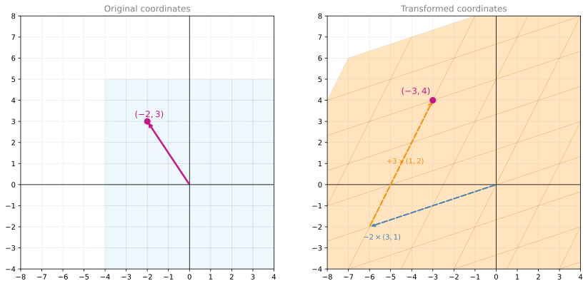
Exercise: Find the Matrix
A linear transformation sends the unit square to the following parallelogram:
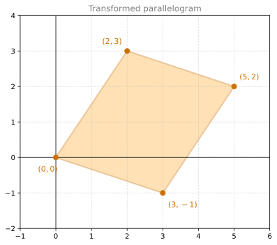
What is the \(2 \times 2\) matrix \(A\) that produces this transformation?
TipSolution
The columns of \(A\) are the images of the basis vectors. \((1, 0)\) goes to \((3, -1)\) and \((0, 1)\) goes to \((2, 3)\):
\[A = \begin{bmatrix} 3 & 2 \\ -1 & 3 \end{bmatrix}\]
Verify: \(A \begin{bmatrix} 1 \\ 1 \end{bmatrix} = \begin{bmatrix} 5 \\ 2 \end{bmatrix}\) ✓
Interactive Tool: Linear Transformations
Note
This is an interactive tool to develop your understanding of the material. You can change the values in the fields below or adjust positions of the vectors on the plots to visualize various linear transformations. You can also look at some pre-determined transformations from the drop-down menu.
Your task: interact with the tool above to complete the following:
Select a few different options from the drop-down menu. Observe how the right plot changes after the selection. Each time you select a new option, the animation will restart. If the animation is too fast, you can slow it down.
Tick the face box. A face should appear on both plots.
- Find a transformation that makes the face look left (but keeps the up-down orientation).
- Find a transformation that turns the face upside down, looking left.
- Make the face disappear (hint: you can achieve this in different ways, for example with a projection).
Change the transformation matrix by hand:
- Make the transformation matrix an identity matrix. What do you see?
- Now change one of the ones in the identity matrix to a two. What happens? Can you name this transformation?
- Change one of the zeroes in the identity matrix to a one. What happens now?
Change the vectors to transform to a different value and observe what happens. For example, start by changing \(\mathbf{v}_1\) to \([1, 1]\) and keeping \(\mathbf{v}_2\) the same.
- Repeat steps 1 and 2 with the new vectors.
- Can you find a transformation matrix that transforms these two vectors back to the original grid that you started with at the beginning?
The Fruit Store Interpretation
Here is another way to think about it. Say you go to the store:
- Day 1: you buy 3 apples and 1 banana
- Day 2: you buy 1 apple and 2 bananas
If the price of apples is \(a\) and the price of bananas is \(b\), then the total you paid each day is:
\[\begin{bmatrix} 3 & 1 \\ 1 & 2 \end{bmatrix} \begin{bmatrix} a \\ b \end{bmatrix} = \begin{bmatrix} \text{Day 1 total} \\ \text{Day 2 total} \end{bmatrix}\]
The linear transformation takes you from a point where the axes are “price of an apple” and “price of a banana” to a point where the axes are “price you paid on Day 1” and “price you paid on Day 2”.
So if apples cost $1 and bananas cost $1, then Day 1 costs $4 and Day 2 costs $3. The transformation sends \((1, 1)\) to \((4, 3)\), exactly as we computed above.
What Makes a Transformation “Linear”?
Not every transformation is linear. A transformation \(T\) is linear if it satisfies two properties for all vectors \(\mathbf{u}\), \(\mathbf{v}\) and any scalar \(c\):
- Additivity: \(T(\mathbf{u} + \mathbf{v}) = T(\mathbf{u}) + T(\mathbf{v})\)
- Homogeneity: \(T(c\mathbf{u}) = cT(\mathbf{u})\)
In plain language: the transformation preserves addition and scalar multiplication. Straight lines stay straight, the origin stays fixed, and parallel lines remain parallel. Every linear transformation can be represented as matrix multiplication: \(T(\mathbf{x}) = A\mathbf{x}\).
Common Transformations in \(\mathbb{R}^2\)
Here are some transformations you encounter often. Each one is defined by a \(2 \times 2\) matrix.
Scaling
Stretches or shrinks along each axis independently:
\[A = \begin{bmatrix} s_a & 0 \\ 0 & s_b \end{bmatrix}\]
If \(s_a = 2\) and \(s_b = 1\), the plane gets stretched horizontally by a factor of 2 while the vertical stays the same.
Rotation
Rotates every point by angle \(\theta\) counterclockwise around the origin:
\[A = \begin{bmatrix} \cos\theta & -\sin\theta \\ \sin\theta & \cos\theta \end{bmatrix}\]
Reflection
Reflects across the \(a\)-axis (flips the \(b\) coordinate):
\[A = \begin{bmatrix} 1 & 0 \\ 0 & -1 \end{bmatrix}\]
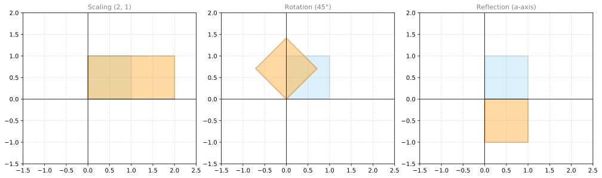
The blue square is the original and the orange shape is the result of the transformation.
Matrix Multiplication as Composition of Transformations
You already know how to multiply a matrix by a vector. Now you will learn how to multiply a matrix by a matrix. The formula is very intuitive: matrix multiplication corresponds to combining two linear transformations into a third one.
Two Transformations in Sequence
Start with the matrix \(A_1 = \begin{bmatrix} 3 & 1 \\ 1 & 2 \end{bmatrix}\) that you already know. It sends the unit square to a parallelogram. Now take a second matrix \(A_2 = \begin{bmatrix} 2 & -1 \\ 0 & 2 \end{bmatrix}\) and apply it to the parallelogram. Let’s see what happens to the basis vectors of the parallelogram:
\[A_2 \begin{bmatrix} 3 \\ 1 \end{bmatrix} = \begin{bmatrix} 5 \\ 2 \end{bmatrix} \qquad A_2 \begin{bmatrix} 1 \\ 2 \end{bmatrix} = \begin{bmatrix} 0 \\ 4 \end{bmatrix}\]
So the first parallelogram gets transformed into a second parallelogram:
<>:19: SyntaxWarning: invalid escape sequence '\c'
<>:19: SyntaxWarning: invalid escape sequence '\c'
<>:19: SyntaxWarning: invalid escape sequence '\c'
<>:19: SyntaxWarning: invalid escape sequence '\c'
/tmp/ipykernel_674458/1608485021.py:19: SyntaxWarning: invalid escape sequence '\c'
(axes[2], pts2, '#90EE90', '#2E8B57', 'After $A_2 \cdot A_1$', '$A_2 \cdot A_1$'),
/tmp/ipykernel_674458/1608485021.py:19: SyntaxWarning: invalid escape sequence '\c'
(axes[2], pts2, '#90EE90', '#2E8B57', 'After $A_2 \cdot A_1$', '$A_2 \cdot A_1$'),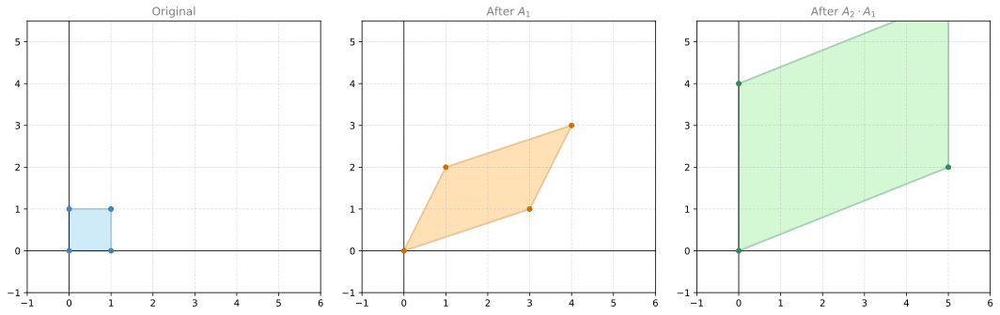
Now if we forget about the middle step, there is a single linear transformation that goes directly from the original to the final result. What matrix corresponds to that transformation?
Look at where the basis vectors end up. \((1, 0)\) goes to \((5, 2)\) and \((0, 1)\) goes to \((0, 4)\). So the combined matrix is:
\[A_2 \cdot A_1 = \begin{bmatrix} 2 & -1 \\ 0 & 2 \end{bmatrix} \cdot \begin{bmatrix} 3 & 1 \\ 1 & 2 \end{bmatrix} = \begin{bmatrix} 5 & 0 \\ 2 & 4 \end{bmatrix}\]
This is matrix multiplication. The product of two matrices gives you the matrix of the combined transformation.
Notice the order: \(A_1\) is applied first but appears on the right. \(A_2\) is applied second but appears on the left. This is because transformations act on the vector from the inside out: \(A_2(A_1 \mathbf{x}) = (A_2 \cdot A_1) \mathbf{x}\).
The Dot Product Formula
Is there a fast way to compute matrix multiplication without drawing transformations? Yes, and you have already seen the building block: the dot product.
Look at the left matrix as rows and the right matrix as columns. Each entry in the result is the dot product of a row from the left matrix and a column from the right matrix:
\[\begin{bmatrix} 2 & -1 \\ 0 & 2 \end{bmatrix} \cdot \begin{bmatrix} 3 & 1 \\ 1 & 2 \end{bmatrix} = \begin{bmatrix} (2)(3)+(-1)(1) & (2)(1)+(-1)(2) \\ (0)(3)+(2)(1) & (0)(1)+(2)(2) \end{bmatrix} = \begin{bmatrix} 5 & 0 \\ 2 & 4 \end{bmatrix}\]
Row 1 dotted with column 1 gives the top-left entry. Row 1 dotted with column 2 gives the top-right entry. And so on.
Rectangular Matrices
Matrix multiplication also works when the matrices are not square. The only rule is that the number of columns of the left matrix must equal the number of rows of the right matrix.
For example, multiply a \(2 \times 3\) matrix by a \(3 \times 4\) matrix. The result is a \(2 \times 4\) matrix:
\[\underbrace{\begin{bmatrix} 3 & 1 & 4 \\ 2 & -1 & 2 \end{bmatrix}}_{2 \times 3} \cdot \underbrace{\begin{bmatrix} 3 & 0 & 5 & 1 \\ 1 & 5 & 2 & 3 \\ -2 & 1 & -1 & 0 \end{bmatrix}}_{3 \times 4} = \underbrace{\begin{bmatrix} 2 & 9 & 13 & 6 \\ 1 & -3 & 6 & -1 \end{bmatrix}}_{2 \times 4}\]
Let’s verify the bottom-left entry: row 2 of the left matrix dotted with column 1 of the right matrix: \((2)(3) + (-1)(1) + (2)(-2) = 6 - 1 - 4 = 1\). Correct.
Dimension Rules
The key takeaways for matrix multiplication:
\[\underbrace{A}_{m \times \mathbf{n}} \cdot \underbrace{B}_{\mathbf{n} \times p} = \underbrace{C}_{m \times p}\]
- The inner dimensions must match: the number of columns of \(A\) must equal the number of rows of \(B\) (both \(n\))
- The result takes its rows from \(A\) (\(m\) rows)
- The result takes its columns from \(B\) (\(p\) columns)
Otherwise, it works just like the \(2 \times 2\) examples: take the dot product of rows from the left matrix and columns from the right matrix to fill in each cell of the result.
The Identity Matrix
When you think of numbers and multiplication, the number 1 is special: multiplying any number by 1 gives you the same number you started with. The identity matrix plays the exact same role among matrices.
The identity matrix has ones on the diagonal and zeros everywhere else:
\[I = \begin{bmatrix} 1 & 0 & 0 \\ 0 & 1 & 0 \\ 0 & 0 & 1 \end{bmatrix}\]
When you multiply any vector by the identity matrix, you get the same vector back:
\[I \begin{bmatrix} a \\ b \\ c \end{bmatrix} = \begin{bmatrix} 1 \cdot a + 0 \cdot b + 0 \cdot c \\ 0 \cdot a + 1 \cdot b + 0 \cdot c \\ 0 \cdot a + 0 \cdot b + 1 \cdot c \end{bmatrix} = \begin{bmatrix} a \\ b \\ c \end{bmatrix}\]
The same holds for matrix multiplication: \(I \cdot A = A\) and \(A \cdot I = A\) for any matrix \(A\).
As a linear transformation, the identity matrix sends every point to itself. The unit square stays the unit square. Nothing moves. That is why it is called the identity.
The Inverse of a Matrix
When you think of numbers, the inverse of 2 is \(\frac{1}{2}\), because \(2 \times \frac{1}{2} = 1\). The inverse of \(-5\) is \(-\frac{1}{5}\), because \((-5) \times (-\frac{1}{5}) = 1\). In every case, a number times its inverse gives you 1.
The inverse of a matrix works the same way: it is the matrix that, when multiplied by the original, gives the identity matrix.
The Transformation That Undoes
Recall the matrix \(A = \begin{bmatrix} 3 & 1 \\ 1 & 2 \end{bmatrix}\) that turns the unit square into a parallelogram. There exists some other transformation that turns that parallelogram back into the original square. The composition of the two is the identity: the plane ends up exactly where it started.
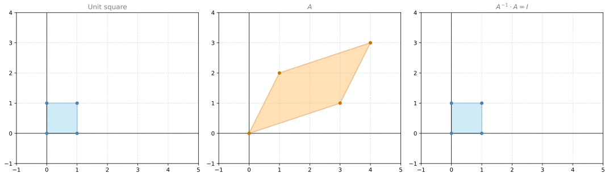
If the inverse matrix is \(A^{-1} = \begin{bmatrix} a & b \\ c & d \end{bmatrix}\), then by definition:
\[A \cdot A^{-1} = \begin{bmatrix} 3 & 1 \\ 1 & 2 \end{bmatrix} \cdot \begin{bmatrix} a & b \\ c & d \end{bmatrix} = \begin{bmatrix} 1 & 0 \\ 0 & 1 \end{bmatrix}\]
Just like with numbers, we write the inverse as \(A^{-1}\) (the matrix raised to the power \(-1\)).
Finding the Inverse
How do you find \(a, b, c, d\)? By solving a system of linear equations. The matrix equation above gives four dot products, each producing one equation:
\[\begin{cases} 3a + c = 1 \\ 3b + d = 0 \\ a + 2c = 0 \\ b + 2d = 1 \end{cases}\]
Using the elimination methods from the earlier notes, you can solve this to get:
\[A^{-1} = \begin{bmatrix} \frac{2}{5} & -\frac{1}{5} \\ -\frac{1}{5} & \frac{3}{5} \end{bmatrix}\]
You can verify: \(A \cdot A^{-1} = I\).
When the Inverse Does Not Exist
Not every matrix has an inverse. Consider the matrix \(\begin{bmatrix} 1 & 2 \\ 2 & 4 \end{bmatrix}\). If you try to find its inverse, you set up the system:
\[\begin{cases} a + 2c = 1 \\ 2a + 4c = 0 \end{cases}\]
The first equation says \(a + 2c = 1\), so \(2a + 4c\) must be 2. But the second equation says \(2a + 4c = 0\). That is a contradiction. The inverse does not exist.
This should look familiar. The second row is twice the first row, so the matrix is singular. Singular matrices do not have inverses. As a transformation, a singular matrix collapses the plane onto a line (or a point), and you cannot undo that.
Quiz: Find the Inverse
Find the inverse of the following matrix:
\[B = \begin{bmatrix} 5 & 2 \\ 1 & 4 \end{bmatrix}\]
TipSolution
Set up \(B \cdot B^{-1} = I\):
\[\begin{cases} 5a + 2c = 1 \\ 5b + 2d = 0 \\ a + 4c = 0 \\ b + 4d = 1 \end{cases}\]
From equations 1 and 3: \(a + 4c = 0 \Rightarrow a = -4c\). Substituting into \(5(-4c) + 2c = 1\): \(-18c = 1\), so \(c = -\frac{1}{18}\) and \(a = \frac{4}{18} = \frac{2}{9}\).
From equations 2 and 4: \(b + 4d = 1 \Rightarrow b = 1 - 4d\). Substituting into \(5(1 - 4d) + 2d = 0\): \(5 - 18d = 0\), so \(d = \frac{5}{18}\) and \(b = 1 - \frac{20}{18} = -\frac{1}{9}\).
\[B^{-1} = \begin{bmatrix} \frac{2}{9} & -\frac{1}{9} \\ -\frac{1}{18} & \frac{5}{18} \end{bmatrix}\]
Which Matrices Have an Inverse?
Matrices behave a lot like numbers. Some numbers have multiplicative inverses: the inverse of 5 is \(\frac{1}{5}\), the inverse of 8 is \(\frac{1}{8}\). But the number 0 has no inverse, because there is no number that when multiplied by 0 gives 1.
The same is true for matrices. The rule is something you have already learned:
- Non-singular matrices (linearly independent rows, full rank) always have an inverse. That is why they are also called invertible.
- Singular matrices (linearly dependent rows, less than full rank) never have an inverse. That is why they are called non-invertible.
The determinant gives you a quick test. Just like non-zero numbers have inverses and zero does not:
| Determinant | Matrix type | Inverse? |
|---|---|---|
| \(\neq 0\) | Non-singular | Invertible |
| \(= 0\) | Singular | Not invertible |
For example:
\[\det \begin{bmatrix} 3 & 1 \\ 1 & 2 \end{bmatrix} = 5 \neq 0 \quad \Rightarrow \quad \text{invertible}\]
\[\det \begin{bmatrix} 1 & 2 \\ 2 & 4 \end{bmatrix} = 0 \quad \Rightarrow \quad \text{not invertible}\]
A non-zero determinant means the matrix has an inverse. A zero determinant means it does not.
Application: A Simple Neural Network (The Perceptron)
Each layer of a neural network applies a linear transformation \(A\mathbf{x}\) followed by a non-linear activation function. Let’s see a concrete example of how this works with a real problem.
A Spam Classifier
Imagine you have a spam dataset. You have identified two words that are quite deterministic for spam: “lottery” and “win”. You count how many times each word appears in several emails and record whether each email is spam:
| “lottery” | “win” | Spam? | |
|---|---|---|---|
| 1 | 0 | 0 | No |
| 2 | 2 | 1 | Yes |
| 3 | 1 | 1 | Yes |
| 4 | 0 | 2 | Yes |
| 5 | 0 | 1 | No |
| 6 | 1 | 0 | No |
The goal is to build a classifier: assign a score to each word, compute the total score of an email by adding up the word scores (with repetition), and classify the email as spam if the score exceeds some threshold.
For example, if the score for “lottery” is 1 and the score for “win” is 1, and the threshold is 1.5, then:
- Email 1: \(1(0) + 1(0) = 0 < 1.5\) → Not spam ✓
- Email 2: \(1(2) + 1(1) = 3 > 1.5\) → Spam ✓
- Email 3: \(1(1) + 1(1) = 2 > 1.5\) → Spam ✓
- Email 4: \(1(0) + 1(2) = 2 > 1.5\) → Spam ✓
- Email 5: \(1(0) + 1(1) = 1 < 1.5\) → Not spam ✓
- Email 6: \(1(1) + 1(0) = 1 < 1.5\) → Not spam ✓
Perfect classification. Every prediction matches the actual label.
As a Matrix-Vector Product
Notice what just happened. The scores for each email are computed by taking the dot product of each row of the data matrix with the model vector:
\[\begin{bmatrix} 0 & 0 \\ 2 & 1 \\ 1 & 1 \\ 0 & 2 \\ 0 & 1 \\ 1 & 0 \end{bmatrix} \cdot \begin{bmatrix} 1 \\ 1 \end{bmatrix} = \begin{bmatrix} 0 \\ 3 \\ 2 \\ 2 \\ 1 \\ 1 \end{bmatrix}\]
Then you apply the threshold check to each entry: if the score is \(\geq 1.5\), predict spam. This check is the activation function.
The Geometric View
Plot the dataset with “lottery” on one axis and “win” on the other. The spam and non-spam emails separate cleanly:
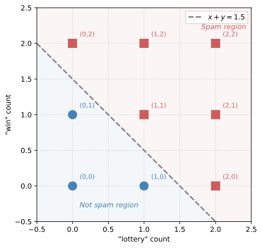
The line \(x + y = 1.5\) separates spam from not spam. This is a linear classifier: a straight line (or hyperplane in higher dimensions) that divides the space into two regions.
The Perceptron
This classifier is the simplest possible neural network: a perceptron (one layer, one neuron). It works as follows:
- Take the input vector \(\mathbf{x}\) (word counts)
- Compute the dot product \(\mathbf{w} \cdot \mathbf{x} + b\), where \(\mathbf{w}\) are the weights and \(b\) is the bias (which equals \(-\text{threshold} = -1.5\))
- Apply the activation function: output 1 (spam) if the result is \(\geq 0\), output 0 (not spam) otherwise
Including the bias in the matrix multiplication is a common trick. You add a column of ones to the data and append the bias to the weight vector:
\[\begin{bmatrix} 0 & 0 & 1 \\ 2 & 1 & 1 \\ 1 & 1 & 1 \\ 0 & 2 & 1 \\ 0 & 1 & 1 \\ 1 & 0 & 1 \end{bmatrix} \cdot \begin{bmatrix} 1 \\ 1 \\ -1.5 \end{bmatrix} = \begin{bmatrix} -1.5 \\ 1.5 \\ 0.5 \\ 0.5 \\ -0.5 \\ -0.5 \end{bmatrix}\]
Now instead of checking against a threshold, you just check if each entry is \(\geq 0\). Same classifier, cleaner formulation.
If you had many more words, you would simply have a wider data matrix and a longer weight vector, but the math works exactly the same way. This is the foundation that more complex neural networks build on: matrix multiplication followed by an activation function, repeated layer after layer.
Lab: Visualizing Linear Transformations with NumPy
import numpy as np
import matplotlib.pyplot as plt
from matplotlib.patches import PolygonDefine a helper to plot the original and transformed unit square:
def plot_transform(A, title=''):
pts = np.array([[0, 0], [1, 0], [1, 1], [0, 1]])
pts_t = (A @ pts.T).T
fig, axes = plt.subplots(1, 2, figsize=(10, 4))
for ax, p, color, label in [
(axes[0], pts, '#87CEEB', 'Original'),
(axes[1], pts_t, '#FFB347', 'Transformed')
]:
poly = Polygon(p, closed=True, fc=color, ec='gray', lw=2, alpha=0.5)
ax.add_patch(poly)
for pt in p:
ax.plot(*pt, 'o', color='gray', markersize=5, zorder=5)
ax.set_xlim(-2, 4)
ax.set_ylim(-2, 4)
ax.set_aspect('equal')
ax.grid(True, linestyle='--', alpha=0.4)
ax.axhline(0, color='black', linewidth=0.8)
ax.axvline(0, color='black', linewidth=0.8)
ax.set_title(label, fontsize=11, color='gray')
fig.suptitle(title, fontsize=13)
plt.tight_layout()
plt.show()The matrix from the example above:
A = np.array([[3, 1],
[1, 2]])
plot_transform(A, 'A = [[3, 1], [1, 2]]')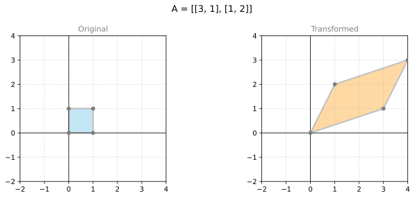
A rotation by 90 degrees:
theta = np.pi / 2
R = np.array([[np.cos(theta), -np.sin(theta)],
[np.sin(theta), np.cos(theta)]])
plot_transform(R, 'Rotation by 90 degrees')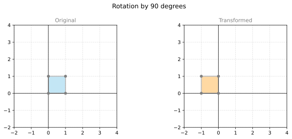
A shear transformation:
S = np.array([[1, 1],
[0, 1]])
plot_transform(S, 'Shear: [[1, 1], [0, 1]]')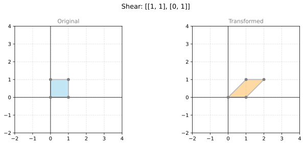
Composition: rotate 45 degrees, then scale by 2 horizontally:
theta = np.pi / 4
R45 = np.array([[np.cos(theta), -np.sin(theta)],
[np.sin(theta), np.cos(theta)]])
Scale = np.array([[2, 0],
[0, 1]])
# Scale applied after rotation: Scale @ R45
plot_transform(Scale @ R45, 'Scale(2,1) after Rotate(45 deg)')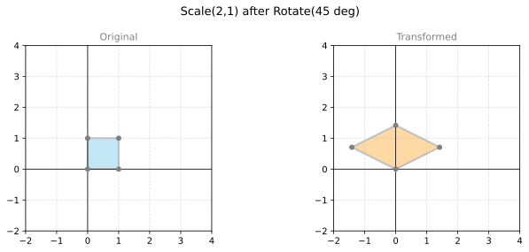
Matrix-vector multiplication to verify the fruit store example:
A = np.array([[3, 1],
[1, 2]])
prices = np.array([1, 1])
print("Prices: apple=$1, banana=$1")
print("Day totals:", A @ prices)Prices: apple=$1, banana=$1
Day totals: [4 3]Matrix multiplication to verify the composition example:
A1 = np.array([[3, 1],
[1, 2]])
A2 = np.array([[2, -1],
[0, 2]])
print("A2 @ A1 =")
print(A2 @ A1)A2 @ A1 =
[[5 0]
[2 4]]Rectangular matrix multiplication:
L = np.array([[3, 1, 4],
[2, -1, 2]])
R = np.array([[3, 0, 5, 1],
[1, 5, 2, 3],
[-2, 1, -1, 0]])
print(f"({L.shape[0]}x{L.shape[1]}) @ ({R.shape[0]}x{R.shape[1]}) = ({L.shape[0]}x{R.shape[1]})")
print(L @ R)(2x3) @ (3x4) = (2x4)
[[ 2 9 13 6]
[ 1 -3 6 -1]]Next: Programming Assignment: Single Perceptron Neural Networks